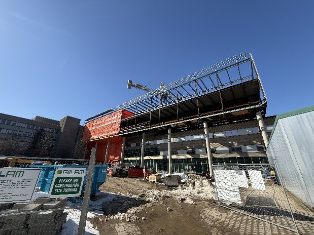
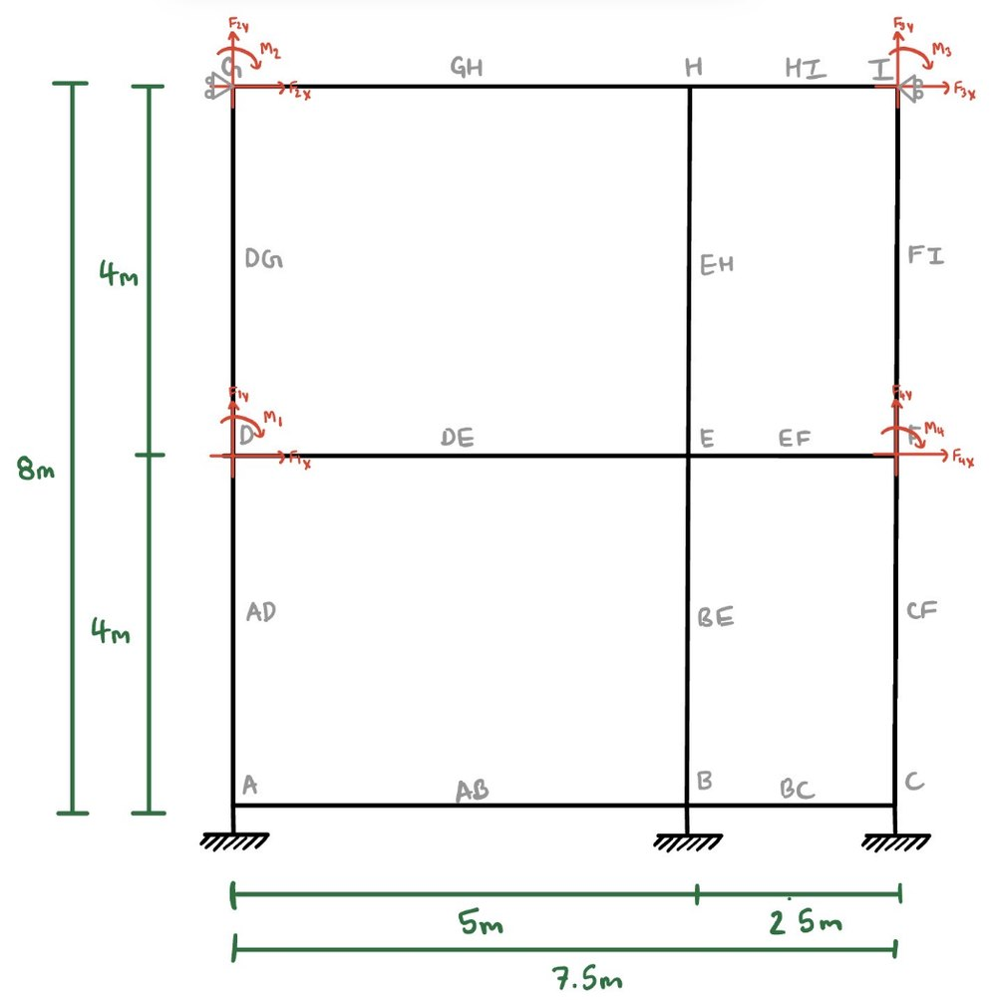
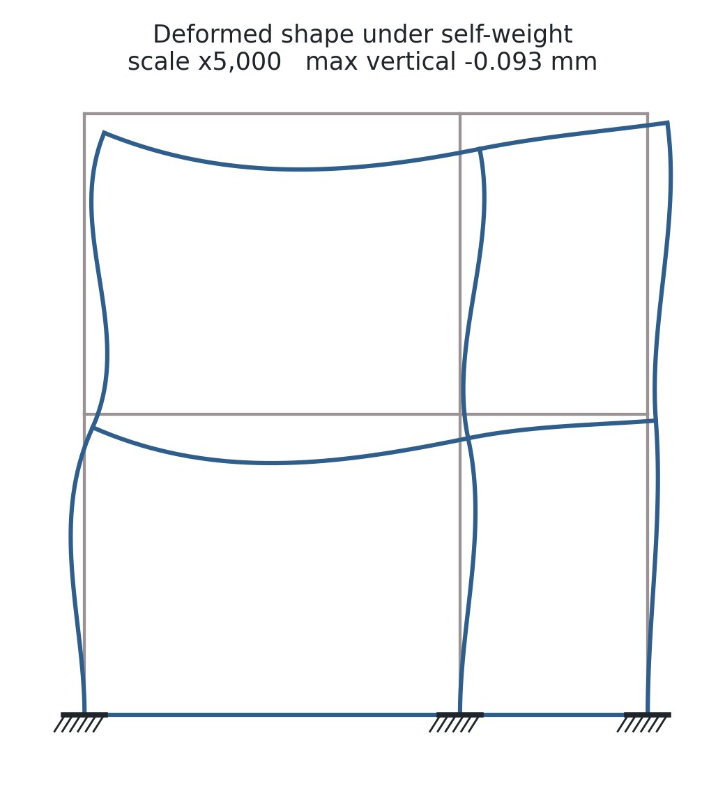
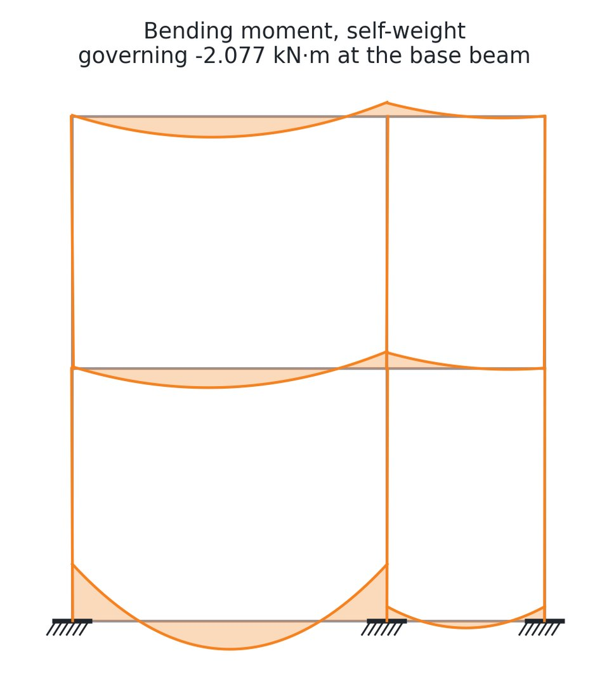
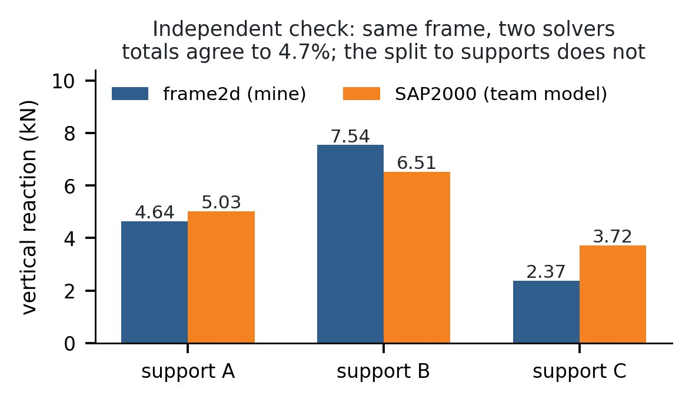

01 / Context
A structure you can walk up to teaches more than one from a textbook.
For CIVE 303 Structural Analysis our team had to choose a real structure, idealise it, and analyse it. We picked the erection steel on the southeast elevation of the Mathematics 4 building, then under construction on the Waterloo campus — close enough to photograph and measure, and simple enough to defend as a plane frame.
The choice did most of the teaching. Standing under it, the thing being analysed was not a finished building at all: bare steel, no slabs, no cladding, no final bracing. It was a temporary condition, and temporary conditions are where structures are most exposed.
02 / Idealisation
Every assumption forced into the open.
Reducing an elevation of erection steel to twelve members meant committing to a set of claims about a real building: where the sub-frame could honestly be cut out of the structure, which connections behaved as rigid, whether the bases could be taken as fixed, and what the frame was actually carrying on the day we photographed it.
- Geometry: 7.5 m in two bays (5.0 m and 2.5 m), 8.0 m in two storeys of 4.0 m.
- Members: W16×67 base beams, W12×22 and W14×22 floor beams, HSS 4×4×1/8 columns.
- Material: structural steel, E = 200 GPa, unit weight 78.5 kN/m³.
- Restraint: three fixed bases, rigid joints throughout, no internal hinges or moment releases identified.


03 / Analysis
Self-weight, influence lines, then live load placed where it hurts.
The team analysis ran in SAP2000 across three load conditions, each answering a different question about the frame.
- Self-weight. Deflected shape, axial force, shear and bending moment for all twelve members, plus the three support reactions.
- Influence lines. The reaction at support B, developed by the Müller-Breslau principle: release the restraint, impose a unit displacement, and read the deflected shape of the released structure as the influence line.
- Live load. A 10 kN/m load placed only on the spans the influence line identified, to produce the maximum effect at B — then over all members, for comparison.
The influence-line step is the part that changed how I read a frame. Müller-Breslau turns a question about load placement into a question about shape, which is far easier to reason about — and it makes the answer visible rather than computed.
04 / Verification
I was not satisfied that I knew what the software had done.
So I wrote a plane-frame solver of my own, in Python, by the direct stiffness method: local element stiffness matrices, transformation into global coordinates, fixed-end forces for distributed and self-weight loading, moment releases, assembly, partition by boundary condition, and recovery of member end forces and internal-force diagrams.
Writing it exposed every convention that commercial software applies silently — sign conventions, release condensation, how a global self-weight load resolves onto a member's local axes. One sign error in that last step made 4.3 kN of vertical load disappear from the model. It was caught not by inspection but by a global equilibrium check, which is exactly why the check exists.
The solver reproduces eight closed-form cases — cantilever under point and distributed load, simply supported and fixed-fixed beams, propped cantilever, pin-jointed bar, moment release, and portal sway — across 20 assertions, to machine precision. On the M4 frame, global equilibrium closes to about 1 part in 1014.


05 / The disagreement
Total load agreed. The load path did not.
Pointed at our own frame, the solver put the total gravity reaction within 4.7 % of the SAP2000 model — 14.55 kN against 15.26 kN. But it distributed that load to the three supports differently, by up to 1.4 kN, which is a large fraction of a small number.
I could not close the gap. A parametric scan over column area and second moment, across the whole plausible range for the section, does not reproduce the SAP2000 distribution from the properties our report tabulated. Two solutions that both satisfy equilibrium but split the load differently are not both describing the same structure.
The reading I take from it is that the member property table we submitted and the model we actually ran were not the same model. Nothing in the SAP2000 output said so — it looked entirely reasonable on its own, which is the part worth remembering.

06 / Outcome
The check is the deliverable.
A clean match would have taught me less. What the exercise actually produced is a working analysis tool I understand line by line, and a concrete demonstration that a plausible-looking result from commercial software can still be wrong — or right for a model that is not the one you documented.
That is the habit I want to carry into structural practice: run the second solution, and treat the disagreement as information rather than as an inconvenience to be smoothed away.